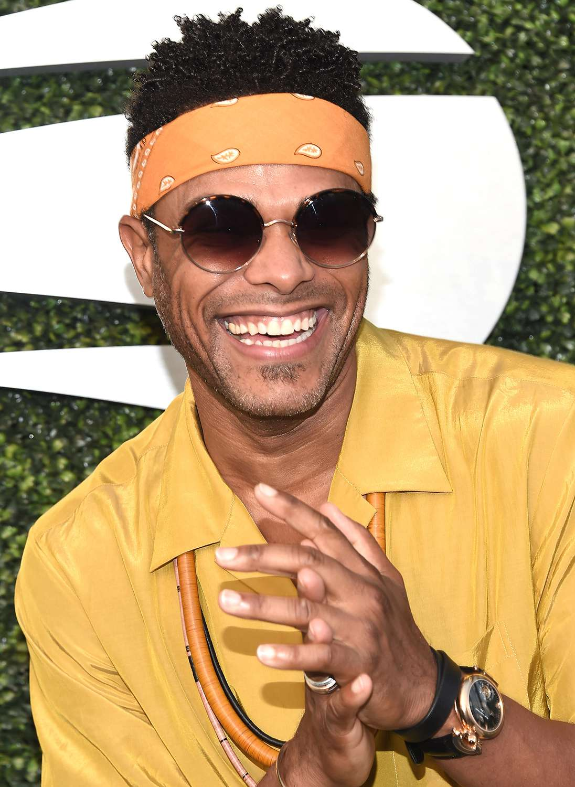

Gerald Maxwell Rivera, The American Singer, Songwriter, and Record Producer.

Gerald Rivera, also known as Maxwell, was born on May 23, 1973 in Brooklyn, New York, to a Haitan mother and a Puerto Rican father. He is a Neo Soul artist, a genre which began in the early 1980's/1990's and is derived from soul and contemporary music. Maxwell released his debut album " Maxwell's Urban Hang Suite", in 1996 after working many years in the New York City club scene's. Maxwell's Urban Hang Suite was a commercial success, and led to many more. As of 2022, Maxwell has won three Grammy Awards; one for Best Male R&B Vocal Performance for "Pretty Wings" in 2010, and two in 2017 for Best R&B Song for "Lake By The Ocean" and Best R&B Album for BLACKsummers'night.